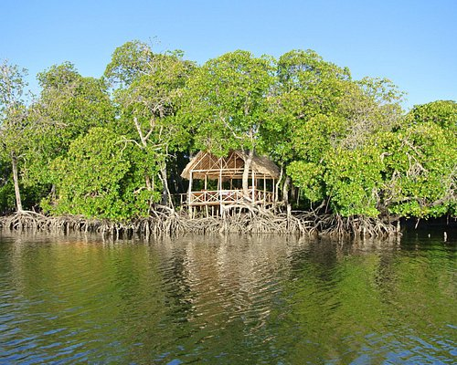

lets dive together and experience ocean wonders

Experience The serene environment at mida creek reserve because we dont just offer travel expeditions we offer class
The escapade is to be rememberedit's the best tourist site in kilifi,
the existence of mnarani ruins which date back to the time of colonialism,the people's history how they lived and how they interacted with their neighbours
one of the most iconic scenery where the mangroove forest is located
nature has taken its' shape, explore the indigenous plants
Dating back in the 18"th century, the people believed in their leader,mekatilili wa menza
who was brave
she led her people in to war and conquered so many enemies